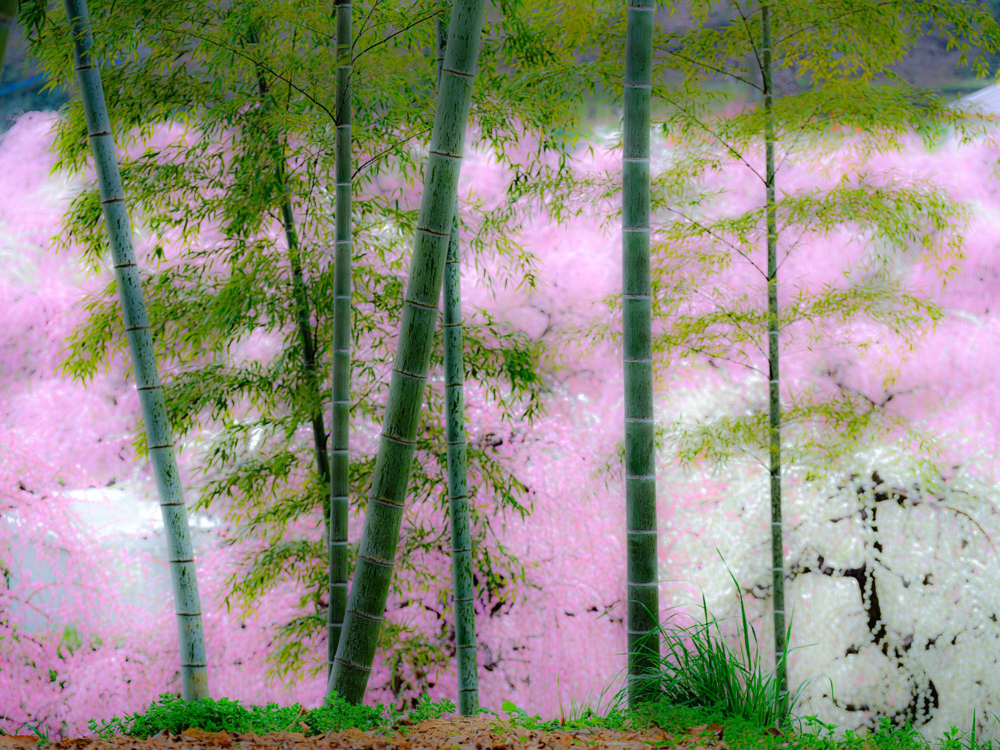

葉崇揚
（Chung-Yang Yeh）
玄關
學術
（書院）
寫真
（縁側）
教學
（茶室）
EN

玄關
· GENKAN
お入りください
三つの部屋。お好きなところから。
01
·
SHOIN · 學術
書院
案上 ・ 書 ・ 墨
紙の山に座する。論文が呼吸する場所。
→ お入り
02
·
ENGAWA · 寫真
縁側
簷下 ・ 庭 ・ 季節
内と外の境。庭が一冊の本となる場所。
→ お入り
03
·
CHASHITSU · 教學
茶室
対座 ・ 一期一会
小さな入り口、大きな対話。
→ お入り
続きへ
それぞれの部屋に、それぞれの空気がある。
書院は紙と墨の匂い。縁側は風と光。茶室は静寂と一服。
上の戸を選んでお入りください。